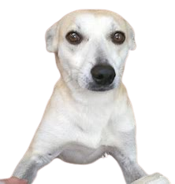
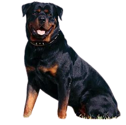

| Éspecies | Imagens | Caracteristicas |
|---|---|---|
| Vira-Lata |

|
Embora as características dos cães vira-lata (ou SRD) sejam extremamente variadas – justamente em função de não terem uma raça definida – a maioria dos cachorros desse tipo é de porte médio, e destacam uma pelagem de cores mais neutras, como cinza, bege ou mais puxada para o preto. |
| Rottweiler |

|
O Rottweiler é um cão de porte médio de origem alemã. - Possui uma estrutura corporal robusta e musculosa. - A cor desta raça é preta com manchas (cabeça, patas, pernas e tórax) na cor ferrugem. - Vivem, aproximadamente, de 10 a 12 anos. |
| Pastor Alemão | 
|
O pastor alemão é uma raça de cachorro ovelheiro ou pastor proveniente da Alemanha, como seu nome sugere. Sua origem remonta a 1899, quando a raça foi desenvolvida por Maximilian von Stephanitz para servir de companheira aos trabalhadores do campo, especialmente na tarefa de proteger e guiar os rebanhos de ovelhas. |
| Shih Tzu | 
|
O Shih Tzu, originalmente o cão de guarda dos monges tibetanos, é uma raça adaptada para viver em apartamentos. Ele é particularmente afetuoso com sua família e com as crianças. Mostra excelente tolerância ao frio, mas pode sofrer com o calor. É sociável com outros animais. |